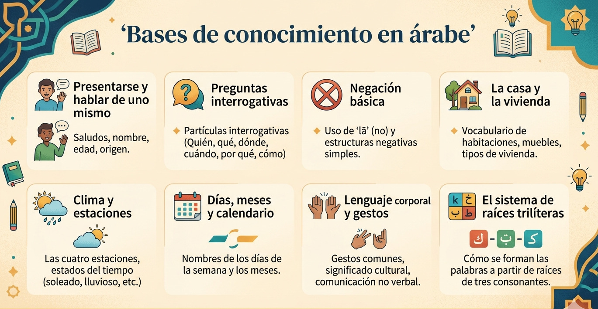

Este curso presenta a los alumnos los principios básicos del idioma árabe desde un nivel principiante (A1–A2). A lo largo de las diferentes secciones se abordan temas fundamentales como el sistema de escritura, la formación básica de las oraciones, el léxico cotidiano y las funciones comunicativas más relevantes (saludos, autopresentaciones, interrogaciones, descripciones y la expresión de sentimientos). Asimismo, se examinan elementos culturales significativos del mundo árabe, tales como las reglas de cortesía, la comunicación no verbal y las maneras de relacionarse socialmente, con el objetivo de entender no solo el idioma, sino su entorno cultural.